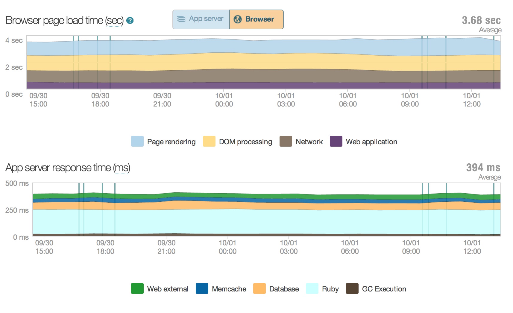
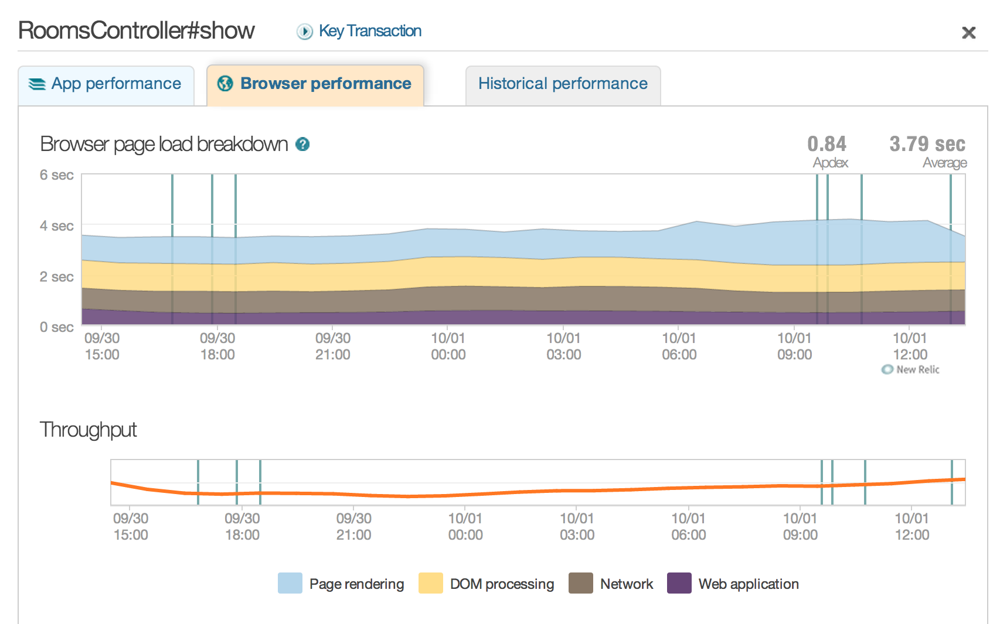
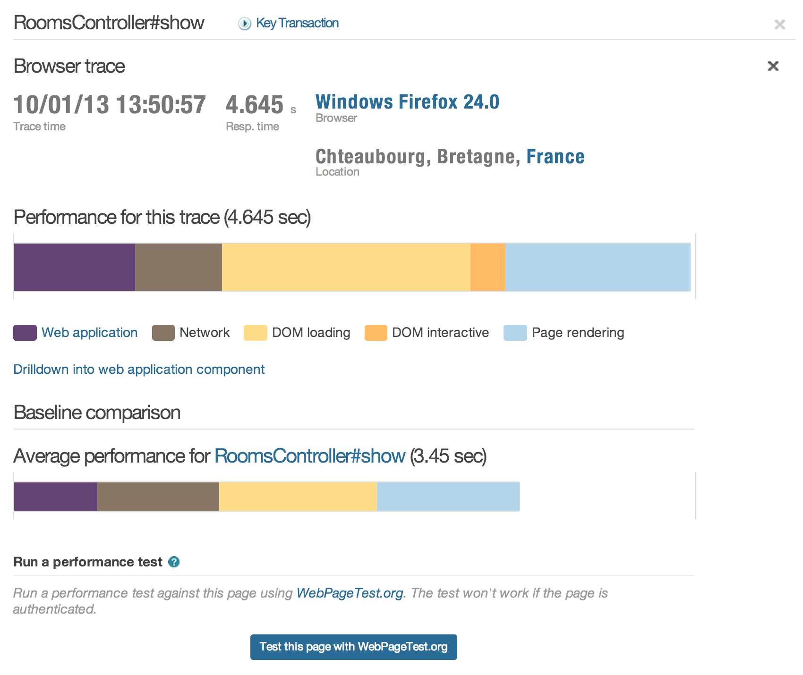
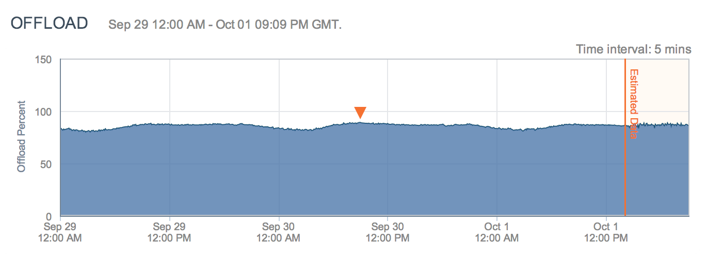

NewRelic helps you identify slow pages and figure out why they're slow.
Backend Performance
>
Optimize Your Server

Backend Performance
>
Optimize Your Server

Backend Performance
>
Optimize Your Server

Backend Performance
>
Optimize Your Server
Caching
Skip hitting your server entirely.
Backend Performance
>
Optimize Your Network

Frontend Performance
Frontend Performance
Optimize loading the page content so the user can start using the
page sooner.
Frontend Performance
Performance Golden Rule
Make Less Requests for Smaller Content
Frontend Performance
Global styles, not per-page styles
Lazy-load images
Lazy-load javascript
Concatenate css, javacsript
Load using sharded, cookieless domains
SPDY
Frontend Performance
In the Cloud
High latency,packet loss,slow browsers,deep packet inspection,old computers,unreliable mobile networks
The Speed of Light
299,792,458 m / s
Frontend Performance
From EC2 in Virginia
15ms to San Francisco
37ms to Beijing
Frontend Performance
I Don't Have a Direct Cable From My Server In Virginia to My Computer
Frontend Performance
distance * speed of light gives us two things to change
Lower the distance
Increase the speed of light
Frontend Performance
Wormholes
Are Prohibitively Expensive
Frontend Performance
Move The Content Closer
Edge Caching via Akamai
Frontend Performance >
Edge Caching
Local servers keep content cached, so users can load
from somewhere close instead of across the world.
Images
CSS
Javascript
Pages that don't refresh often
Frontend Performance
Measuring Your Frontend Performance
Frontend Performance >
Tooling
Google Analytics
Compare against other sites
image of google analytics
Frontend Performance >
Tooling
RUM Metrics
Compare our key metrics against historical data
Allows us to watch the impact of changes we make
Frontend Performance >
Tooling
New Relic's RUM
image of NR RUM
Frontend Performance >
Tooling
Using our own RUM and storing it in Hive allows us to query by
country, page, and store data about a/b tests to compare the same
page with different content or improvements..
Frontend Performance >
Tooling
We particularly care about page median load time and pages that take
over 3 seconds and 5 seconds, respectively ("slow" load times.)
Frontend Performance >
Tooling
image of RUM Metrics by global median
Frontend Performance >
Tooling
image of RUM Metrics by top pages
Frontend Performance >
Tooling
New Relic's Apdex
Apdex tells us how many people are "satisfied" with the load time
of a site. Super useful to watch for regressions and problems.
Frontend Performance >
Tooling
Your Browser's Network Tab
Watch for slow requests and large files.
Frontend Performance >
Tooling
Image of network tab
Frontend Performance >
Tooling
PageSpeed
Automated recommendations based on common performance problems.
Frontend Performance >
Tooling
Image of pagespeed
Frontend Performance >
Tooling
WebPageTest
Side-by-side comparisons of load times from servers all over
the world.
Frontend Performance >
Tooling
Image of webpagetest result page
Frontend Performance >
Tooling
Image of webpagetest result request page
Frontend Performance >
Tooling
Image of webpagetest comparison videos
Tying It All Together
With:
NewRelic to tell us how to optimize our backend
RUM and WebPageTest to tell us what part of a request is slow (TTFB, rendering, load time)
NewRelic and Google Analytics to tell us what pages are hit most
WebPageTest, browser tests, and PageSpeed to give us insight into requests
WebPageTest to run A/B tests on changes and test in different countries
RUM to watch what impact our changes are having
We can decrease our page load time and focus our efforts on the
pages that users spend the most time waiting on, and decrease
bounce rate and increase happiness.